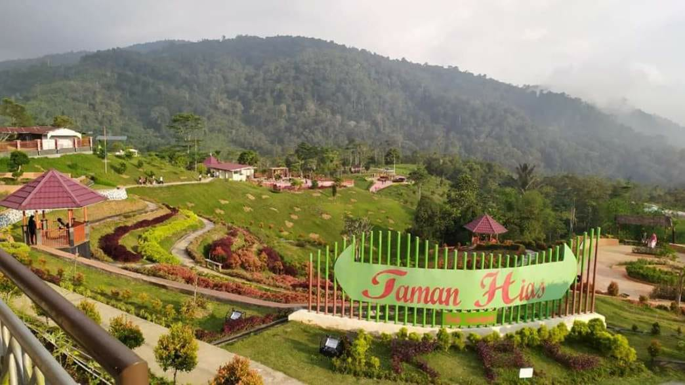

Sejarah
Provinsi Lampung lahir pada tanggal 18 Maret 1964 dengan ditetapkannya Peraturan Pemerintah Nomor 31964 yang kemudian menjadi Undang-undang Nomor 14 tahun 1964. Sebelum itu Provinsi Lampung merupakan Karesidenan yang tergabung dengan Provinsi Sumatera Selatan.
Kendatipun Provinsi Lampung sebelum tanggal 18 maret 1964 tersebut secara administratif masih merupakan bagian dari Provinsi Sumatera Selatan, namun daerah ini jauh sebelum Indonesia merdeka memang telah menunjukkan potensi yang sangat besar serta corak warna kebudayaan tersendiri yang dapat menambah khasanah adat budaya di Nusantara yang tercinta ini. Oleh karena itu pada zaman VOC daerah Lampung tidak terlepas dari incaran penjajahan Belanda.
Geografis
Posisi provinsi Lampung secara geografis di sebelah Barat berbatasan dengan Samudra Hindia, di sebelah Timur dengan Laut Jawa, di sebelah Utara berbatasan dengan provinsi Sumatra Selatan, dan di sebelah Selatan berbatasan dengan Selat Sunda.
Provinsi Lampung memiliki pelabuhan utama bernama Pelabuhan Panjang dan Pelabuhan Bakauheni, bandar udara utama yakni Radin Intan II terletak 28 km dari ibu kota provinsi, serta Stasiun Tanjung Karang di pusat ibu kota. Tahun 2020, penduduk provinsi Lampung berjumlah 9.007.848 jiwa, dengan kepadatan 268 jiwa/km2
Wisata
Jenis wisata yang dapat dikunjungi di Lampung adalah Wisata Budaya di beberapa Kampung Tua di Sukau, Liwa, Kembahang, Batu Brak, Kenali, Ranau dan Krui di Lampung Bara
Kampung Tua
KAMPUNG TUA NONGSA SEBAGAI TUJUAN WISATA BERBASIS KEARIFAN LOKAL BUDAYA MELAYU BATAM
Liwa

Ketenangan dan kesejukan menjadi dua hal yang bisa wisatawan rasanya ketika berada di Liwa, ibukota Kabupaten Lampung Barat. Kota ini dikelilingi pegunungan yang berada di rangkaian Bukit Barisan. Berjarak sekitar 236 kilometer dari Bandar Lampung, Liwa bisa dicapai dalam waktu 6 jam.